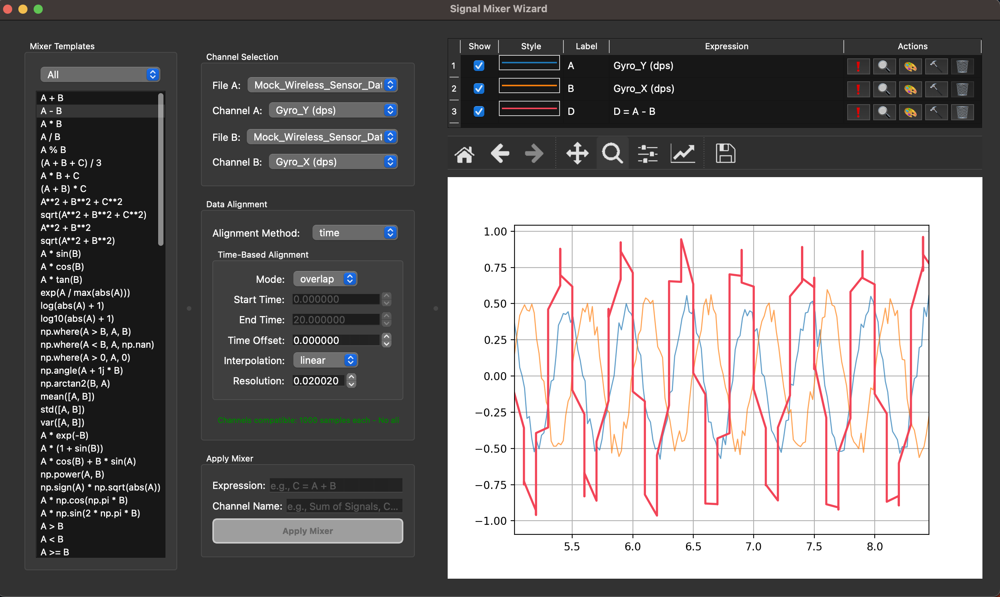

Raw Dog is a standalone desktop GUI for parsing, processing, and visualizing time-series data. Built for hobbyists, engineers and researchers, it enables a raw-to-plot workflow with no coding required. It follows a glass-box philosophy, exposing the underlying Python code for inspection and customization.
Key Features
Instant workflow: Load → Parse → Process → Visualize
Signal operations: filter, normalize, resample, and more
Comparison tools: Bland-Altman, correlation, and error histograms
Customizable plots: Multi-subplot layouts with stylization options
Transparent backend: Inspect, edit, and run custom Python scripts
Quick Demo (30s)
Full Demo (YouTube)
Screenshots
Main Interface: Load data, auto-parse, and visualize raw signals.
Process Wizard: Apply transformations like filtering, normalization, and resampling — no code needed.
Mix Wizard: Mix two signals using templates or custom expressions.

Compare Wizard: Visualize agreement between channels using Bland-Altman, correlation, or error histograms.
Plot Wizard: Build multi-subplot figures with stylized plots and full layout control.
Note
This is a beta release. I'm actively working to improve stability. It's free to use . If you find Raw Dog helpful and want to support future development, please reach out or share.